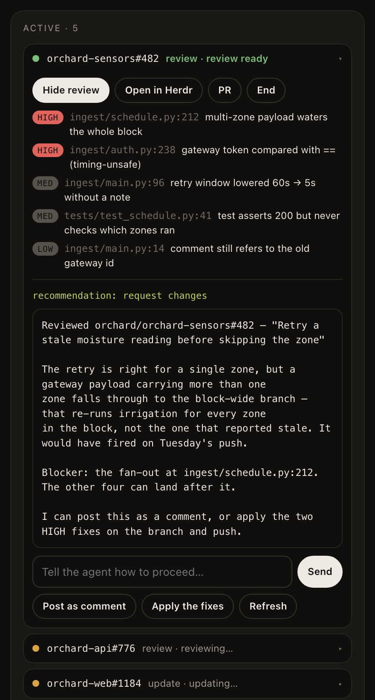

herdr-dia
The Morning Brief knows which pull requests need you. This prototype lets you act on them from the browser. This report says what it does today, what a version built into Dia could do, and the tradeoffs behind that.
01 · Where this came from
I saw the posting for the AI Prototyper role, and I had been using Herdr to manage my coding agents. Dia's chat can read a pull request I have on screen and talk it through with me, but it could not dispatch an agent to review that pull request or send it off to do something different. That gap was the whole idea, and this extension was built to close it. Here is what I found.
02 · What it does today
| In the panel | What it does |
|---|---|
| Track pull requests | Your own pull requests and your team's in a single view, under whichever GitHub identity the panel is signed in as. Five tabs: Favorites for the people you follow, Mine, Brief for what is addressed to you, Team, and Other. |
| Dispatch a review | The review requests that fill your brief arrive in the panel from GitHub. Any one of them goes to a coding agent running on your machine, in your own checkout, signed in as you. A setting decides how much it may do on its own: Plan has it propose and wait for you, Auto lets it post the review itself. |
| Chat with the agent | A field under the review sends whatever you want to say straight to the session, whether it is still working or finished. Post as comment and Apply the fixes are that field with the words already filled in. |
| Return findings | The agent comes back with findings by severity, each with file and line, what is wrong, and a fix. Your job moves from reading the diff to judging what it found. |
| Track and merge | Mine shows where each of your own pull requests stands, and Merge comes alive once one is approved and mergeable. |
| Monitor from the browser | The Active board carries every session the panel started, with its live state, and Peek reads a review while the agent is still writing it. Nothing needs a terminal to check on. |
| Start from the page you are on | Open any pull request in any tab and the panel offers it: review it, or describe a change and let an agent make it in a git worktree of its own, leaving your checkout untouched. |

Figure 1. A review that is ready. The panel is rendered here against fictional data.
It is a browser extension and a small local process, public under MIT, and it works with whichever coding agent the local runtime has installed. It took two evenings, and I have used it every day since, which at the time of writing is not many days.
03 · The questions it left me with
Are the reviews any good?
This is the first thing I would build next. Every review already ends in one line of structured findings, and a review can be launched without the browser, so the harness is small: pull requests with seeded defects and an answer key, run past each agent and each variant of the brief, several runs each, scored on the seeded findings the agent caught against the ones it invented, with the recommendation checked as well. The first fixture exists. Until that runs, nobody should trust the reviews, and that includes me.
Does the shape match how other people review?
I designed this for one reader, and Peek exists because I wanted it once during a long review. The layout is a guess that has been sitting still long enough to look like a decision. A handful of people using it for a week on their own repositories, watched rather than surveyed, would tell me more than any further building.
Does it hold up against GitHub's API?
The panel refreshes every twenty seconds, and each refresh is three calls, so an open panel spends roughly 540 calls an hour against a personal token's 5,000. That is comfortable for one window and less so for several profiles left open all day, and each call takes between 400 and 900 milliseconds, which is what the cache in front of it exists to hide. The harder limit is that both lists stop at 100 items, so at enterprise volume the queue quietly drops what it cannot fit. A version built into the browser and talking to GitHub as an app would share one quota across an installation, which is a different problem again.
How do you filter a list nobody chose for you?
At work my review is requested on more open pull requests than one fetch returns, across dozens of repositories, and almost none of it because a person picked me. It arrives through team rules and code owners that were never meant to address me personally. Favorites, the repository filter and a default that hides approved pull requests are a start, and they are crude. Working out what deserves a person's attention is most of the product, and the Morning Brief already answers that question better than I can from outside it.
What happens across profiles and identities?
Dia has profiles, the extension has a GitHub identity picker, and the two know nothing about each other. A session records no identity today, so switching accounts leaves the other account's agents on the board, which is a known defect with a known fix. Under it is a question I have not looked at: what a running agent should be allowed to see when the person switches profiles, and what a work profile and a personal one owe each other on the same machine.
04 · Where it could go
Built into the browser, the brief's own list carries the action and a running agent is a card in the tab's chat. The finished review lands in the conversation where you discussed the diff with Dia, and your reply is the approval, which is the one step an extension can never do. The storyboard below is how I would want that to look.
Figure 2. Four moments in a morning. Click it to open it full size.
After that, the same machinery reaches the tab you are reading, the checks after a merge, and more of git, until every agent session on the machine is visible in the browser. That version needs the answers in section 03 first.
| Choice | One way | The other | My read |
|---|---|---|---|
| Where the list comes from | The brief: already ranked from a source that knows you; needs the feature to reach it | A separate queue: works from an extension today; duplicates the brief and stops at 100 items | The brief. |
| Extension or feature | Extension: fills the gap today, works in any Chromium browser, cannot reach the chat | Feature: closes the loop through the conversation; needs decisions about process launch, sessions and profiles | Extension until the feature exists. |
| What the brief becomes | A summary you read: calm, finished in a minute, and nothing in it changes after you close it | A place you act from: items carry a button and a live state, so the brief has to reflect what happened after you clicked | Act from it, on the items the brief already chose to show, and let it carry their state through the day. |
The design document has the architecture, the decision records, the assumptions with a way to check each one, and the known defects.
05 · Next
The next step is a conversation. I would like to walk you through this against a live pull request, and then talk about where it goes. How far can agentic engineering move into the browser, and what does an orchestration product built on one look like? Does any of this fit the picture you already have for Dia, and what would you need on the infrastructure side to run it? That last question decides more than the design does. I am excited to learn more about how the team works and where an agentic engineering background can help. Let's get together and talk.